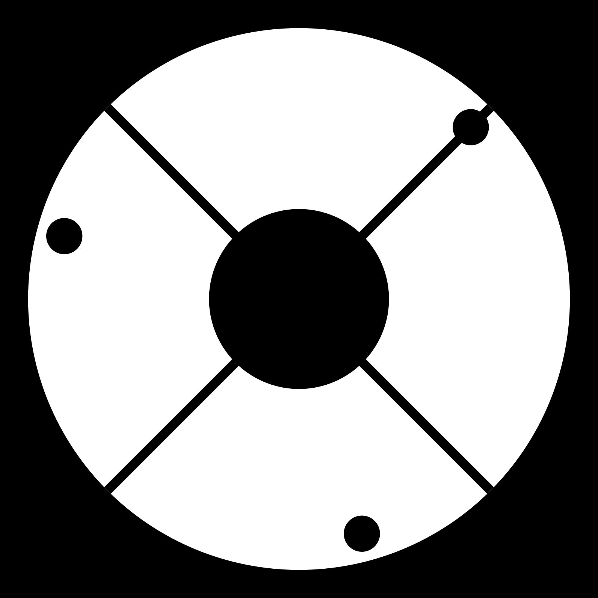
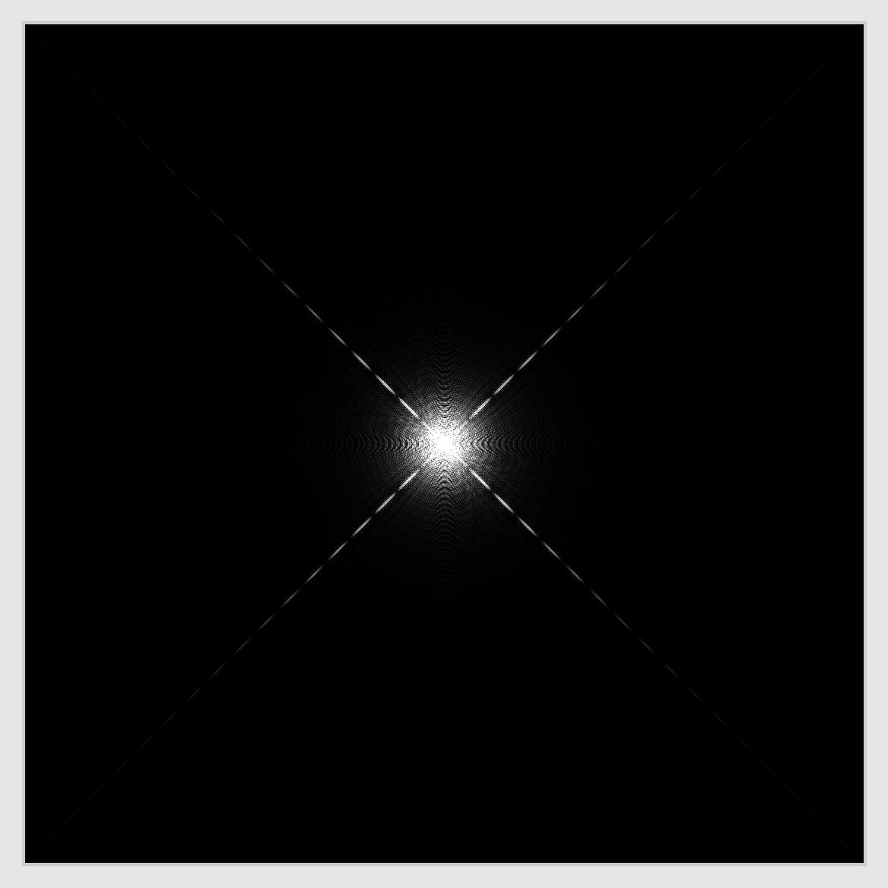
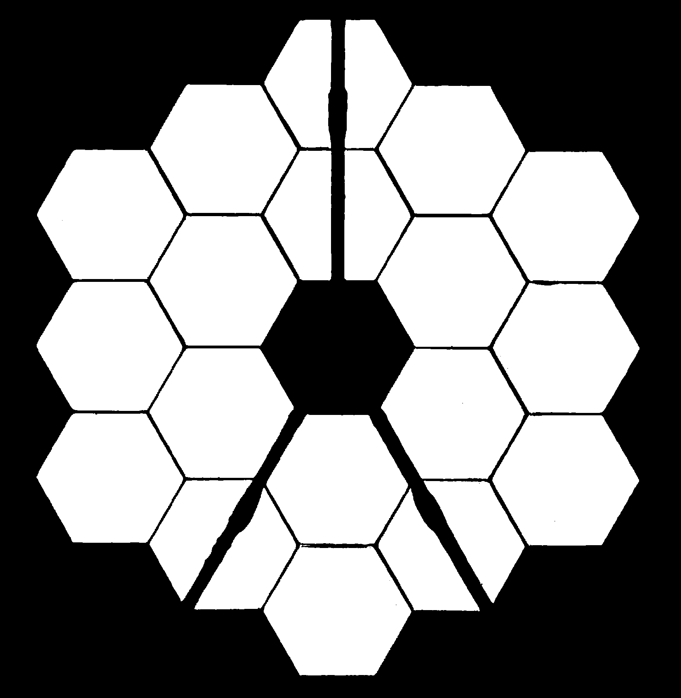
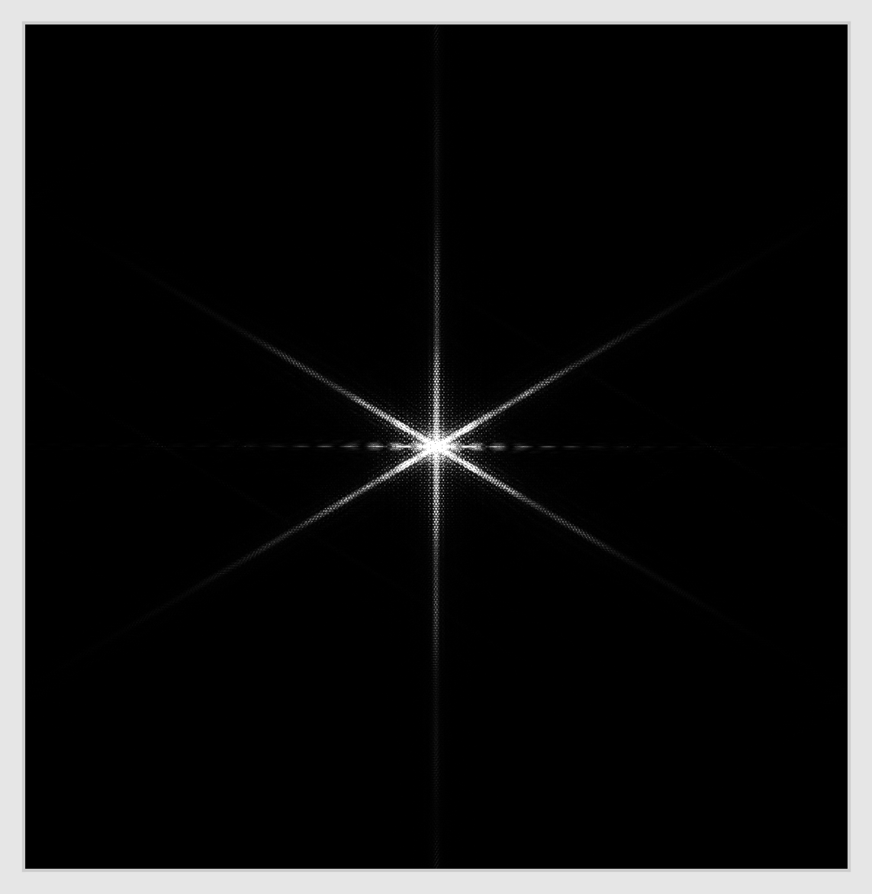

Diffraction
What an image tells you about the camera (or telescope or your eye)

- The first target I designed for the Nova laser!
- Photo taken by a National Geographic photographer with an ordinary (nice) camera, not a Nova diagnostic.
- The ten pointed stars have nothing to do with the fact that Nova had ten laser beams.
- Instead, this camera had a five sided lens iris, visible in the reflections below and to the right of the target.
- I don't understand many things about this image (e.g.- the red color of the chamber port behind the target), but the ten pointed stars are caused by diffraction from the pentagonal lens iris.

Hubble telescope image

Webb telescope image

(Beware, however, that published telescope images are usually "cleaned up" to more accurately present the object in the image.)
Hubble telescope pupil shows supports for secondary mirror
 Webb telescope pupil shows secondary supports plus hexagonal segment edges
 - Straight edges produce perpendicular diffraction spikes
- Hubble: Spikes are from secondary mirror struts
- Webb: Six spikes from hex segment edges, horizontal spikes from vertical mirror strut
- Pentagonal lens iris: Ten spikes!
- An approximate (small angle) modern formulation of Huygen's Principle.
- Imagine a field of stars at various angles $\theta$ relative to optical axis.
- The lens (or mirror) maps $\theta \approx k_x/k$ in the lens plane into position $x$ in the focal plane according to $\theta=x/f$, where $f$ is focal length.
- Thus each position $x$ in the image plane gets only the light with a particular transverse wavenumber $k_x$ in the lens plane. A lens Fourier transforms incident light waves!
- Sharp edges of pupil or shadow of support struts contain high spatial frequencies - large $k_x$ in lens plane means large extent in $x$ in image plane.
- Fourier transform of a top hat (like strut shadow) is a sinc function ($\sin x/x$), which you can use to make rough models of diffraction spikes.
- Note that spike amplitude a given distance from center is roughly independent of the shadow width - only band period changes.
- Diffraction spikes are a nuisance (for scientific instruments), but the effect can be extremely useful too!
- Diffraction gratings are used to separate colors, bend beams, and amplify very short pulse laser beams.
- Most integrated optics work by diffraction - so transmitting your phone conversations often relies on diffractive optics.
- NIF laser has diffractive phase plate in its final optics to produce a smooth laser spot on the target.